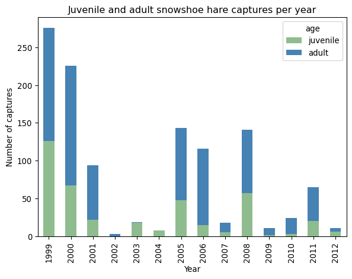
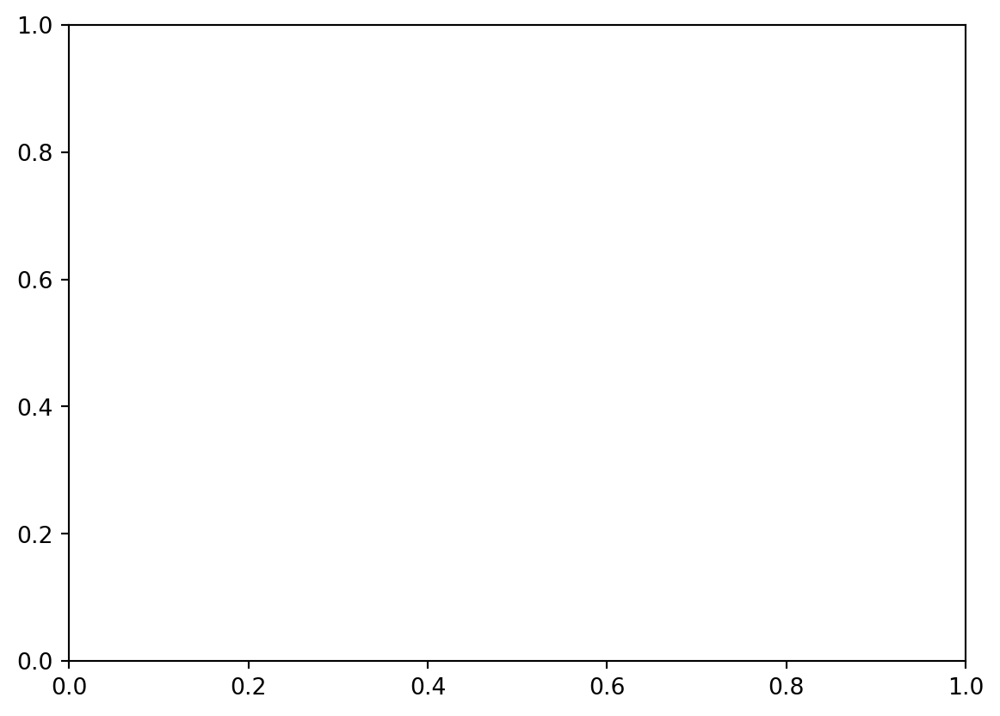
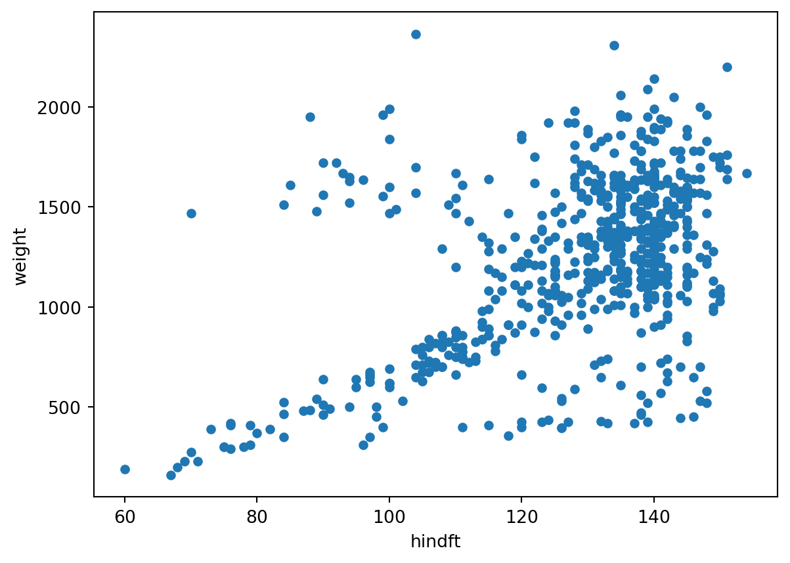
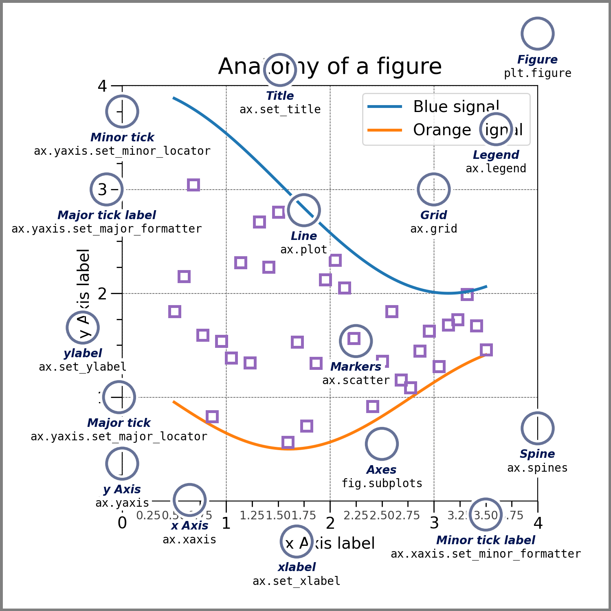
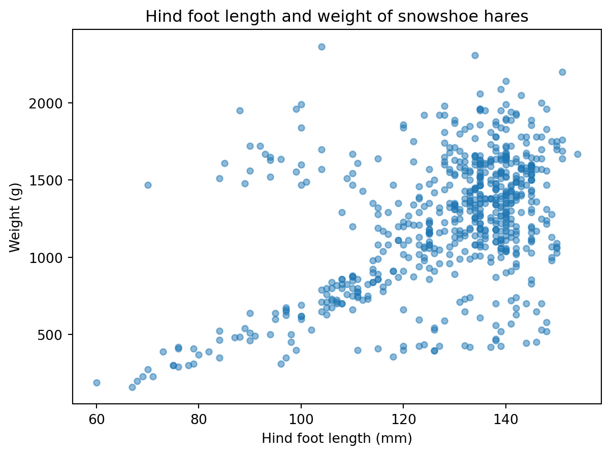
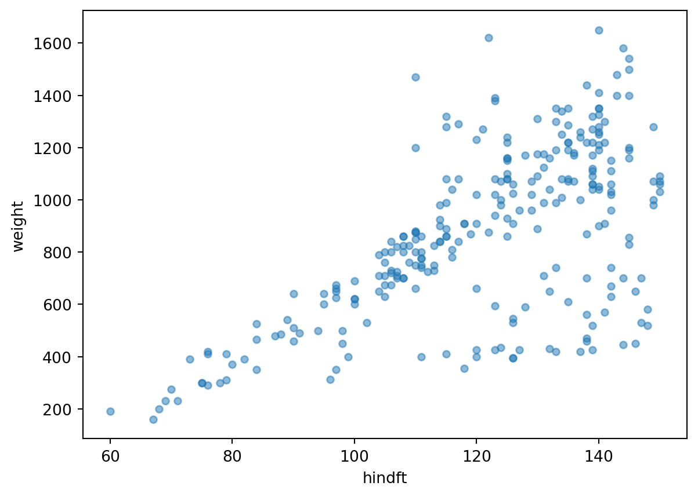
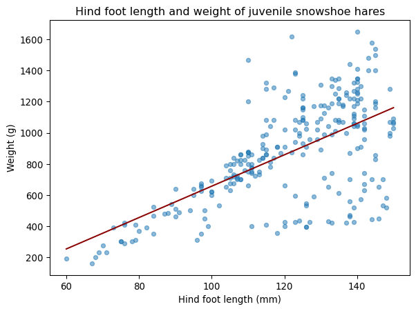
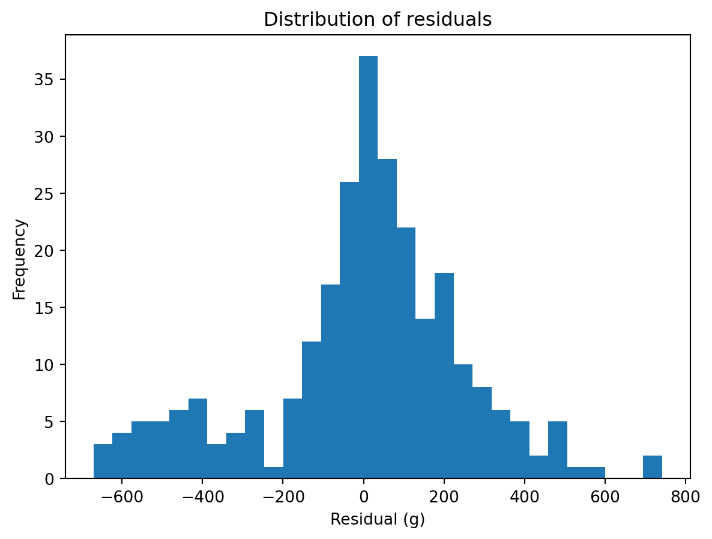
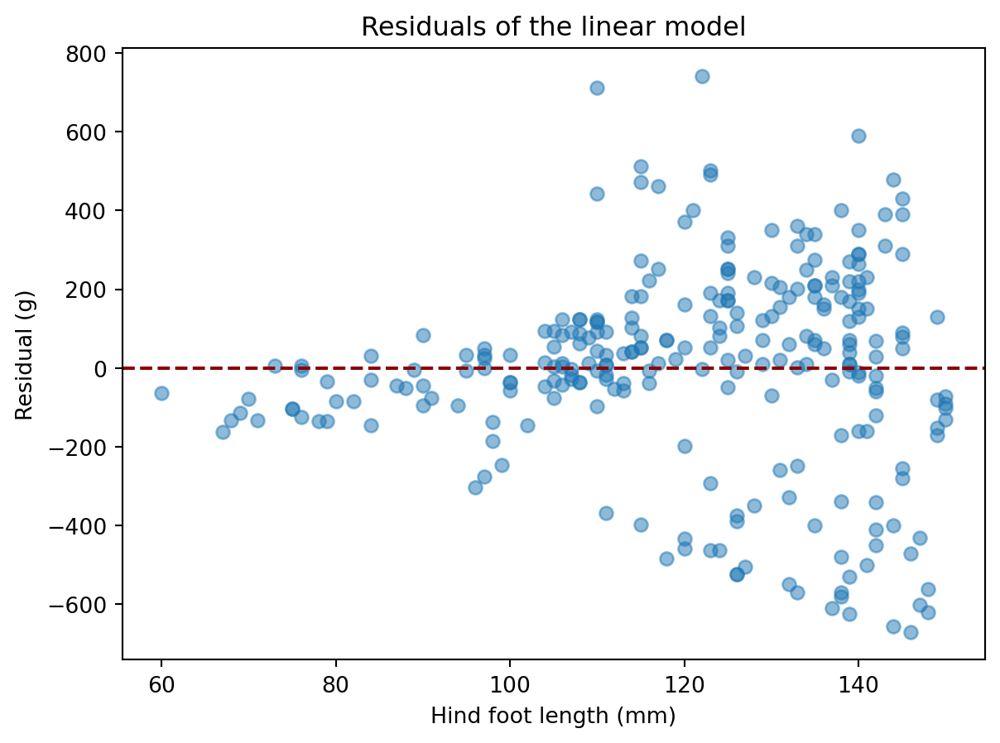

import os
import pandas as pd
import matplotlib.pyplot as plt
import statsmodels.formula.api as smf7 Linear regression
In this lesson we will learn how to perform a simple linear regression by examining the counts, weight, and size measurements of juvenile snowshoe hares (Lepus americanus) observed at the Bonanza Creek Experimental Forest from 1998 to 2012 [1].
Learning objectives
By the end of this lesson, students will be able to:
- Explore a dataset’s values against its metadata and document data cleaning decisions.
- Create plots with multiple layers using
matplotlib’sfigandax. - Fit a simple linear regression with
statsmodelsusing a formula. - Interpret the intercept, slope and \(R^2\) of a linear regression model.
- Use residuals to assess whether a linear model is a good description of the data.
About the data
Size measurements, sex, and age of snowshoe hares were collected and made available by Dr. Knut Kielland and colleagues at the Bonanza Creek Experimental Forest Long Term Ecological Research (LTER) site located approximately 20 km southwest of Fairbanks, Alaska, USA. The data contains 3380 observations (captures) of snowshoe hares obtained by capture-recapture studies conducted yearly from 1998 to 2012 in three sampling sites: Bonanza Riparian, Bonanza Mature and Bonanza Black Spruce.
Data exploration
Download the 55_Hare_Data_2012.txt file available here and save it in a data/ folder next to your notebook. This is the same file used in discussion section 3: a copy of 55_Hare_Data_2012.txt from version 22 of the EDI data package.
Let’s start by loading the data and taking a very high-level look at it:
obs = pd.read_csv(os.path.join('data','55_Hare_Data_2012.txt'))
obs.head()| date | time | grid | trap | l_ear | r_ear | sex | age | weight | hindft | notes | b_key | session_id | study | |
|---|---|---|---|---|---|---|---|---|---|---|---|---|---|---|
| 0 | 11/26/1998 | NaN | bonrip | 1A | 414D096A08 | NaN | NaN | NaN | 1370.0 | 160.0 | NaN | 917.0 | 51 | Population |
| 1 | 11/26/1998 | NaN | bonrip | 2C | 414D320671 | NaN | M | NaN | 1430.0 | NaN | NaN | 936.0 | 51 | Population |
| 2 | 11/26/1998 | NaN | bonrip | 2D | 414D103E3A | NaN | M | NaN | 1430.0 | NaN | NaN | 921.0 | 51 | Population |
| 3 | 11/26/1998 | NaN | bonrip | 2E | 414D262D43 | NaN | NaN | NaN | 1490.0 | 135.0 | NaN | 931.0 | 51 | Population |
| 4 | 11/26/1998 | NaN | bonrip | 3B | 414D2B4B58 | NaN | NaN | NaN | 1710.0 | 150.0 | NaN | 933.0 | 51 | Population |
obs.info()<class 'pandas.core.frame.DataFrame'>
RangeIndex: 3380 entries, 0 to 3379
Data columns (total 14 columns):
# Column Non-Null Count Dtype
--- ------ -------------- -----
0 date 3380 non-null object
1 time 264 non-null object
2 grid 3380 non-null object
3 trap 3368 non-null object
4 l_ear 3332 non-null object
5 r_ear 3211 non-null object
6 sex 3028 non-null object
7 age 1269 non-null object
8 weight 2845 non-null float64
9 hindft 1633 non-null float64
10 notes 243 non-null object
11 b_key 3333 non-null float64
12 session_id 3380 non-null int64
13 study 3217 non-null object
dtypes: float64(3), int64(1), object(10)
memory usage: 369.8+ KBWe can see from the info() display that most of these variables are of type object (most likely str), and these are expected to be categorical variables. Other columns as weight and hindft contain continuous numerical variables.
To facilitate our data wrangling we convert the date column to a datetime type:
obs['date'] = pd.to_datetime(obs['date'])
print(obs['date'].dtype)datetime64[ns]Examining hares’ age data
From the data’s info() display we can see that the age column has 1269 non-NA rows. In this example we are interested in working with data from juvenile hares exclusively. So we will:
- Examine the values in the
agecolumn - Filter for observations in which age is ‘adult’ or ‘juvenile’
- Investigate the age distributions across time
From the dataset’s metadata we know there are three allowed values in the age column:
- ‘a’ for ‘adult’,
- ‘j’ for ‘juvenile’, and
- ‘m’ for ‘mortality’.
Let’s see the data in this column:
# Examine unique values and counts in age column
pd.DataFrame(obs['age'].value_counts(dropna=False))| count | |
|---|---|
| age | |
| NaN | 2111 |
| A | 564 |
| J | 267 |
| a | 183 |
| j | 128 |
| 1/2/2013 | 21 |
| 1/4/2013 | 21 |
| 3/4/2013 | 18 |
| 1 | 12 |
| U | 11 |
| ? | 10 |
| a 3/4 yr. | 4 |
| 2 yrs. | 3 |
| u | 3 |
| A 3/4 | 2 |
| 1.5 | 2 |
| 3.5 yrs. | 2 |
| 2.25 yrs | 2 |
| 1 yr. | 2 |
| 1 yr | 2 |
| a 1 yr. | 2 |
| A 1.5 | 1 |
| 2.5 yrs | 1 |
| 3 yrs. | 1 |
| a 2 yrs. | 1 |
| J 3/4 | 1 |
| 2 yrs | 1 |
| A 1/2 | 1 |
| a 1 yr | 1 |
| 1.25 | 1 |
| 3.25 yrs. | 1 |
Since the actual data has values that are not included in the metadata, this is the time to make a decision and document it. Since the metadata states that ‘a’ indicates adult and ‘j’ indicates juvenile, we will only keep observations that have ‘a’ or ‘j’ (either capitalized or not) as part of the age value.
# Update age values to juvenile and adult for observations where 'a' and 'j' are included
obs.loc[obs['age'].str.contains('j', case=False, na=False), 'age'] = 'juvenile'
obs.loc[obs['age'].str.contains('a', case=False, na=False), 'age'] = 'adult'
# Filter for confirmed observations of juvenile and adult hares
obs_juv_adult = obs[obs['age'].isin(['juvenile', 'adult'])].copy()
print("Number of juvenile and adult hare observations (captures):", len(obs_juv_adult))Number of juvenile and adult hare observations (captures): 1155None of the observations from 1998 have a valid age, so from here on our data starts in 1999.
To better understand our data we examine the distribution of hare age across years. Let’s wrangle our data a bit to get there:
# Extract year in which each observation happened
obs_juv_adult['year'] = obs_juv_adult['date'].dt.year
# Count observations per year and age, then move age values into columns
obs_per_year = obs_juv_adult.groupby(['year', 'age']).size().unstack()
obs_per_year| age | adult | juvenile |
|---|---|---|
| year | ||
| 1999 | 150.0 | 126.0 |
| 2000 | 159.0 | 67.0 |
| 2001 | 72.0 | 22.0 |
| 2002 | 3.0 | NaN |
| 2003 | 1.0 | 18.0 |
| 2004 | NaN | 8.0 |
| 2005 | 95.0 | 48.0 |
| 2006 | 101.0 | 15.0 |
| 2007 | 13.0 | 5.0 |
| 2008 | 84.0 | 57.0 |
| 2009 | 10.0 | 1.0 |
| 2010 | 21.0 | 3.0 |
| 2011 | 45.0 | 20.0 |
| 2012 | 5.0 | 6.0 |
If you are wondering, here year is the name of the data frame’s row index and age is the name of the column index. In this format it is easy to create a stacked bar plot to examine the occurrence of juvenile and adult hares:
obs_per_year[['juvenile', 'adult']].plot(kind='bar', # Columns in stacking order
stacked=True, # Stack the bars
color=['#8FBC8F', '#4682B4'],
title='Juvenile and adult snowshoe hare captures per year',
xlabel='Year',
ylabel='Number of captures');
No observations of juvenile snowshoe hares were made during 2002, while the highest count was registered in 1999 (the first year of the study) with 126 observations. In the previous plot we can see that the number of juvenile hare trappings dropped sharply from 1999 to 2002 and stayed lower for the rest of the study, with peaks in 2005, 2008, and 2011.
TipCheck-in
Consider the following questions:
- In what ways could the data collection methods affect the results we see here?
- Is there additional metadata you would need to better understand the data?
Plotting with matplotlib
matplotlib’s fig and ax
Later in this lesson we will want to plot our linear model together with our data. To make visualizations where we add different layers to a graph and customize it, we will use the matplotlib Python library for creating visualizations. We can interact with matplotlib via its pyplot interface, which we imported at the top of the notebook.
Matplotlib graphs the data in a figure which can have one or more axes. The axes is only the area specified by the \(x\) axis and \(y\) axis and what is plotted in it, while the figure can include multiple axes in it.

To create a new blank figure:
- Initialize a new figure and axes by calling
pyplot’ssubplots()function - Display the figure using
plt.show():
# Initialize empty figure (fig) and axis (ax)
fig, ax = plt.subplots()
# Display figure
plt.show()
Notice that plt.subplots() is a function that returns two objects, when we call it, we get a figure fig with a single empty axis ax. We can think of this step as setting a new blank canvas on which we will paint upon.
Adding a layer
When using matplotlib, it can be useful to think of creating a plot as adding layers to an axis. The general syntax to plot data from a data frame df onto an axis is:
# Initialize empty figure and axis
fig, ax = plt.subplots()
# Plot df on the ax axis
df.plot(ax=ax, # Add plot to axis
...) # Other arguments for plot function
# Display figure
plt.show()For example, let’s add a scatter plot of the hind foot length and weight of all the juvenile and adult captures to our axis:
# Initialize empty figure and axis
fig, ax = plt.subplots()
# Add scatter plot of hares' data to our figure's axis
obs_juv_adult.plot(kind='scatter', x='hindft', y='weight', ax=ax)
# Display figure
plt.show()
Customization
Matplotlib allows for a lot of customization. Some of it can be done directly in the plot() method for the data frame (like we’ve done when plotting data using pandas), while other is done by updating attributes of the ax axis. The following diagram shows some examples of elements in the axis that can be updated.

For example, we can update the title and axis labels of our previous plot like this:
# Initialize empty figure and axis
fig, ax = plt.subplots()
# Add data to axis
obs_juv_adult.plot(kind='scatter',
x='hindft',
y='weight',
alpha=0.5, # Adjust transparency
ax=ax) # Add plot to axis
# Update axis
ax.set_title('Hind foot length and weight of snowshoe hares')
ax.set_xlabel('Hind foot length (mm)')
ax.set_ylabel('Weight (g)')
# Display figure
plt.show()
Linear regression
For our analysis we want to investigate possible relations between hind foot length and weight for juvenile hares. Let’s take a look at our target data:
# Subset juvenile hares and drop rows missing hind foot or weight measurements
juveniles_weight_hindft = obs_juv_adult[obs_juv_adult['age'] == 'juvenile'].dropna(subset=['hindft', 'weight'])
print("Number of juvenile hare captures with hind foot and weight measurements:", len(juveniles_weight_hindft))
juveniles_weight_hindft.plot.scatter(x='hindft', y='weight', alpha=0.5)Number of juvenile hare captures with hind foot and weight measurements: 265
Remember from our bar plot that the number of captures changed a lot from year to year: our regression combines juveniles from all years, and almost a third of them (79 of 265) were captured in 1999.
We can see there seems to be a linear trend between the weight and hind foot length variables, though as the hind foot length increases the variability does too.
Let’s investigate whether a linear model is an adequate way to describe this data. To do this we will use the statsmodels library, which has tools for fitting statistical models. At the top of the notebook we imported it as smf.
Remember that in statistical notation the linear regression model is
\[y = \beta_0 + \beta_1 x + \epsilon,\]
where \(x\) = the predictor variable, \(y\) is the response variable, and \(\epsilon \sim Normal(0, \sigma)\). Once we estimate the coefficients from the data, the equation of the fitted line is
\[\hat{y} = \hat\beta_0 + \hat\beta_1 x, \]
where
- \(\hat{y}\) = the estimated value of the response \(y\) at \(x\) from the linear model
- \(\hat\beta_0\) = the \(y\)-intercept of the linear model, this is interpreted as the estimated average value of the response when the predictor is \(x=0\)
- \(\hat\beta_1\) = the slope of the linear model, this is the estimated difference in the response \(\hat{y}\) per unit of the predictor \(x\).
If you need a refresher about how a linear regression works, click here for a great resource.
To fit the model we use the ols() function, short for ordinary least squares, the method that finds the line that minimizes the sum of the squared vertical distances between the data points and the line. It takes two arguments:
- a formula of the form
'response ~ predictor', a string that we can read as “response explained by predictor”. The names in the formula are the names of the columns in our data frame. data: the data frame with those columns.
ols() sets up the model, and calling fit() on it estimates the coefficients:
# Fit model: weight explained by hind foot length
model = smf.ols('weight ~ hindft', data=juveniles_weight_hindft).fit()The estimated coefficients are stored in the model’s params attribute, a pandas.Series whose index has the names of the coefficients:
model.paramsIntercept -352.771986
hindft 10.092240
dtype: float64The Intercept value is \(\hat\beta_0\) and the hindft value is \(\hat\beta_1\), the slope for the hind foot length. Let’s save them in variables to use them later:
# Retrieve intercept and slope
intercept = model.params['Intercept']
print("y-intercept:", intercept)
slope = model.params['hindft']
print("Slope:", slope)y-intercept: -352.77198564640645
Slope: 10.092239638623006
TipExercise
Answer the following questions:
What would be the biological meaning of the \(y\)-intercept? Does it make sense to use it as such?
What is the estimated change in weight for each millimeter increase in hind foot length? Write your answer in a full sentence.
Estimate the weight of a juvenile hare with hind foot length of 90 mm. Is this a reasonable use of the model?
We can also look at the coefficient of determination, \(R^2\). This is between 0 and 1, with \(R^2=1\) describing a perfect fit of the model to the data. The \(R^2\) value is interpreted as the proportion of variance in the response \(y\) that is explained by the least squares line with the predictor \(x\).
This value is stored in the model’s rsquared attribute:
print("R^2:", model.rsquared)R^2: 0.3871164783665738
TipCheck-in
Answer the following questions:
Does a linear model of weight with respect to hind foot length account completely for the change in the response?
How would you further explore whether this model is a good fit for the data?
A reasonable next step would be to plot our linear model together with our data. To do this, we need to add two layers to the same graph: the data points and the regression line.
To draw the line we use the axis’s plot() method, ax.plot(x_values, y_values), which connects the points given by the lists of \(x\) and \(y\) values. A straight line only needs two points, so we use the smallest and largest hind foot lengths and calculate their estimated weights with the equation of the linear model, \(\hat{y} = \hat\beta_0 + \hat\beta_1 x\):
# Smallest and largest hind foot lengths
x_start = juveniles_weight_hindft['hindft'].min()
x_end = juveniles_weight_hindft['hindft'].max()
# Initialize empty figure and axis
fig, ax = plt.subplots()
# Add data to axis
juveniles_weight_hindft.plot(kind='scatter',
x='hindft',
y='weight',
alpha=0.5, # Adjust transparency
ax=ax) # Add plot to axis
# Add regression line to axis
ax.plot([x_start, x_end],
[intercept + slope*x_start, intercept + slope*x_end],
color='darkred')
# Update axis
ax.set_title('Hind foot length and weight of juvenile snowshoe hares')
ax.set_xlabel('Hind foot length (mm)')
ax.set_ylabel('Weight (g)')
# Display figure
plt.show()
Checking the residuals
\(R^2\) tells us how much of the variation the model explains, but not whether a straight line is the right shape for the data. One check for this is looking at the residuals. A residual is the difference between an observed value and the value predicted by the model:
\[e_i = y_i - \hat{y}_i.\]
The residuals are the \(\epsilon\) in our model equation, so the model assumes they are normally distributed around 0, with the same standard deviation \(\sigma\) for every value of the predictor. statsmodels calculates the residuals for us and stores them in the model’s resid attribute.
model.resid108 -523.850209
109 -609.864845
110 -655.510522
111 -397.835573
112 -549.403647
...
3355 -46.820937
3359 117.625625
3360 117.625625
3367 -276.175259
3369 -37.189895
Length: 265, dtype: float64Let’s start with a histogram to see their distribution:
model.resid.plot(kind='hist',
bins=30,
title='Distribution of residuals',
xlabel='Residual (g)')
The residuals are centered near 0 and roughly bell-shaped, but with a long tail of negative residuals: some hares weigh much less than the line predicts. Let’s see where these residuals come from.
If a linear model describes the data well, the residuals should be scattered randomly around 0, with about the same spread for every value of \(x\). Let’s plot them against the hind foot length. Since the residuals are not a column of our data frame, we plot them with the axis’s scatter() method, ax.scatter(x_values, y_values). We also add a horizontal reference line at 0 with ax.axhline():
# Initialize empty figure and axis
fig, ax = plt.subplots()
# Add residuals to axis
ax.scatter(juveniles_weight_hindft['hindft'], model.resid, alpha=0.5)
# Add reference line at 0
ax.axhline(0, color='darkred', linestyle='--')
# Update axis
ax.set_title('Residuals of the linear model')
ax.set_xlabel('Hind foot length (mm)')
ax.set_ylabel('Residual (g)')
# Display figure
plt.show()
The residuals show three patterns:
- The spread grows with hind foot length. For short hind feet most residuals are within about 100 g of 0, while for the longest hind feet many are more than 300 g away. This is the increasing variability we noticed in the first scatter plot. It means the model’s predictions are less precise for larger juveniles.
- The residuals are not centered on 0 everywhere. For hind feet shorter than about 100 mm most residuals are negative (the line overestimates weight), while for medium hind feet they are mostly positive (the line underestimates weight). This suggests that the relationship between hind foot length and weight is not exactly linear.
- For longer hind feet the residuals split into two groups, one above and one below the line. This could mean that another variable also affects weight.
None of these patterns means the model is useless: the line still captures the overall trend. But they are a reminder that a single \(R^2\) value doesn’t tell the whole story, and that we should be careful when using the model to make predictions, especially for larger juveniles.
TipCheck-in
- For longer hind feet, the residuals split into two groups. Looking at the columns in our data, which variables could explain these groups?
- Each row in our data is a capture, and some hares were captured more than once. Are two captures of the same hare independent observations? How could this affect our model?
Wrap-up
In this lesson we fit a simple linear regression of juvenile snowshoe hare weight on hind foot length. Before modeling, we explored the data and documented how we handled the age values that didn’t match the metadata. We then used statsmodels to estimate the intercept and slope, measured the fit with \(R^2\), and plotted the fitted line with matplotlib. Finally, the residuals showed that while the line captures the overall trend, the spread grows with hind foot length and other variables may also affect weight. Fitting a model is only the first step: checking it against the data tells us how far we can trust it!
References
[1]
K. Kielland, F. S. Chapin, R. W. Ruess, and Bonanza Creek LTER, “Snowshoe hare physical data in Bonanza Creek Experimental Forest: 1999-Present.” Environmental Data Initiative, 2017. doi: 10.6073/PASTA/03DCE4856D79B91557D8E6CE2CBCDC14. Available: https://portal.edirepository.org/nis/mapbrowse?packageid=knb-lter-bnz.55.22. [Accessed: Oct. 12, 2024]